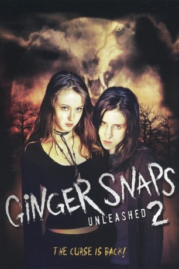

#10968 Ginger Snaps II: Entfesselt
 
 IMDB-Wertung: 6.5 / 10
IMDB-Wertung: 6.5 / 10  Metascore: 0
Metascore: 0 
Ihre zum Werwolf mutierte Schwester Ginger ist tot und Brigitte, ebenfalls von dem Virus befallen, wird bald auch eine Bestie werden. Nur der Extrakt der Wolfseisenhutpflanze kann diese Verwandlung unterdrücken. Doch da ist noch ein Problem ein alles vernichtender Werwolf ist hinter dem Mädchen her. Am Ende ihrer Kräfte landet Brigitte in einer abgelegenen Heilanstalt. Zu allem Überfluss nimmt man ihr das Serum weg. Bekommt sie es nicht wieder, so prophezeit Brigitte, werden schreckliche Dinge geschehen.
Jahr: 2004
Dauer: 94 Minuten
FSK: 16
Land: Kanada Studio: e-m-s the DVD-CompanyTonspuren: DTS - ,
Untertitel: Deutsch, Englisch,
Auflösung: 1080p (1920x1080) Größe: 8448 MB
Genre: Thriller, Horror
Regisseur: Brett Sullivan
Drehbuch: Karen Walton, Megan Martin
Soundtrack: Kurt Swinghammer
Darsteller:
 Emily Perkins als Brigitte
Emily Perkins als Brigitte Brendan Fletcher als Jeremy
Brendan Fletcher als Jeremy Katharine Isabelle als Ginger
Katharine Isabelle als Ginger Tatiana Maslany als Ghost
Tatiana Maslany als Ghost Janet Kidder als Alice
Janet Kidder als Alice Pascale Hutton als Beth-Ann
Pascale Hutton als Beth-Ann- Michelle Beaudoin als Winnie
 Eric Johnson als Tyler
Eric Johnson als Tyler- Shaun Johnston als Jack
 Jake McKinnon als The Beast
Jake McKinnon als The Beast- Lindsey Campbell als Happier Times Resident (uncredited)
- Susan Adam als Barbara
- Chris Fassbender als Luke
- David McNally als Marcus
- Patricia Idlette als Dr. Brookner
- Lydia Lau als Koral
- Coralie Cairns als Nurse
- Trigger als Rocky
- Stephanie Wahlstrom als Butch Girl (uncredited)
- Marie Zydek als Drug Rehab Girl (uncredited)
Datei: X:\3-Trilogie(G-M)\Ginger Snaps\Ginger Snaps II Entfesselt (2004, FSK16, 1920x1080).mkv seit 14.04.2019
Festplatte: HD Collection-2(A-Z)-3(A-M)
 Alle Filme aus Gruppe '3-Trilogie(G-M)\Ginger Snaps'
Alle Filme aus Gruppe '3-Trilogie(G-M)\Ginger Snaps'